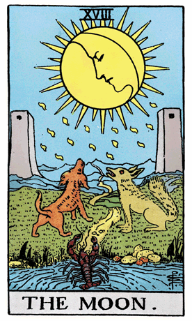

Our exploration of the Rider-Waite Tarot Deck brings us to The Moon, a symbol of uncertainty, intuition, and the unveiling of the unconscious. In this card, two dogs howl at the moon, a lobster emerges from the water, and a winding path leads between two towers into the distance. The moon shines in the night sky, shedding both light and shadow on the landscape.
The moon in the Rider-Waite Tarot Deck represents the realm of the unconscious, the mysterious, and the unseen. The two towers symbolize the dualistic nature of existence, while the path between them suggests a journey into the unknown. The water and the lobster emerging from it signify the fluidity of emotions and the deep, instinctual aspects of the psyche.
The two dogs howling at the moon represent the animalistic and instinctual nature of human beings. The moon illuminates both the conscious and unconscious realms, shedding light on hidden aspects of the self that may not always be fully understood or acknowledged.
In a tarot reading, The Moon often emerges as a symbol of uncertainty, confusion, and the importance of intuition. It suggests a time for exploring the depths of the unconscious, trusting one's instincts, and navigating through the mysteries of the psyche.
The Moon challenges individuals to embrace the unknown and explore the hidden aspects of the self. It signifies a period of heightened intuition and sensitivity, where the veils between the conscious and unconscious worlds are thin.
The winding path between the towers represents the journey of self-discovery and the need to navigate through uncertainty. The Moon encourages individuals to trust their instincts and follow the inner guidance that emerges during times of darkness and ambiguity.
From a psychological perspective, The Moon represents the unveiling of the unconscious, the exploration of hidden fears and desires, and the recognition of the intuitive aspects of the psyche. It signifies the importance of integrating both the known and unknown elements of the self.
In a reversed position, The Moon may indicate a fear of facing the unknown, confusion, or a reluctance to explore the depths of the unconscious. It could suggest a need for introspection, developing intuition, and embracing the mysteries of the psyche. In such cases, the reversed Moon serves as a gentle guide toward self-discovery and the acceptance of the uncertainties that come with it.
Archetypally, The Moon aligns with the archetype of the Mystic or Explorer—a figure that journeys into the depths of the unconscious to unveil hidden truths. The Moon symbolizes the mystery and magic that come from exploring the realms beyond the rational mind.
Societally, The Moon encourages communities to embrace uncertainty, value intuition, and recognize the importance of exploring the hidden aspects of collective consciousness. It emphasizes the potential for growth and insight that comes from navigating the mysteries of the unknown.
In conclusion, The Moon in the Rider-Waite Tarot Deck invites us to embrace uncertainty, trust our intuition, and explore the depths of the unconscious. It encourages individuals to navigate through the mysteries of the psyche with openness and curiosity, recognizing the transformative potential that lies in the realm of the unknown.